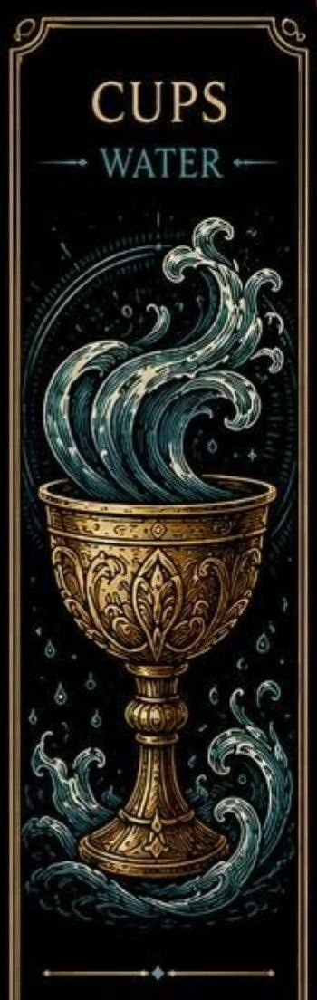
Poháre sú jednou zo štyroch sád Malej arkány v tarote. Predstavujú emócie, vzťahy, intuície a vnútorný svet človeka.
Táto sada sa zameriava na pocity, medziľudské spojenia a spôsob, akým prežívame udalosti okolo seba.
Poháre sú spojené s elementom vody. Ich karty často hovoria o láske, priateľstve, empatii, snoch a emocionálnom raste.
Môžu naznačovať obdobie radosti a blízkosti, ale aj potrebu vyrovnať sa s citlivými témami alebo vnútornými konfliktmi.
Pohár predstavuje nádobu na emócie, skúsenosti a vzťahy. Voda v kartách symbolizuje intuície, podvedomie a schopnosť prispôsobovať sa životným situáciám.
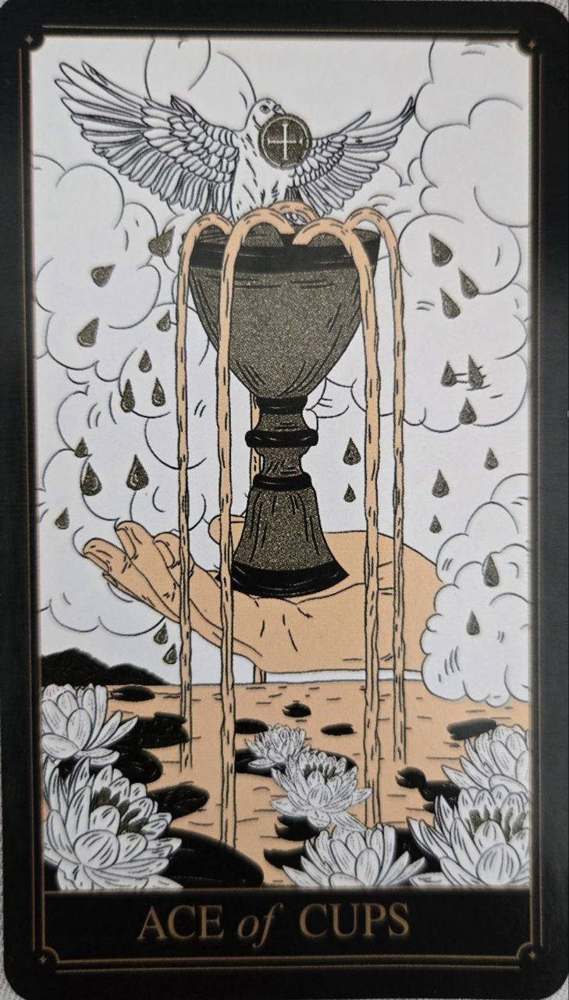
Karta nových emócií, lásky a citového naplnenia. Predstavuje otvorené srdce a začiatok emocionálne významného obdobia.
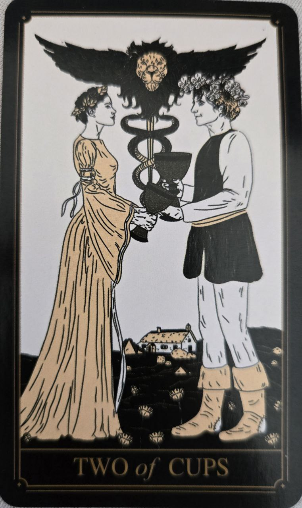
Symbol partnerstva, vzájomného porozumenia a harmonického spojenia. Často sa spája s láskou, priateľstvom alebo spoluprácou.
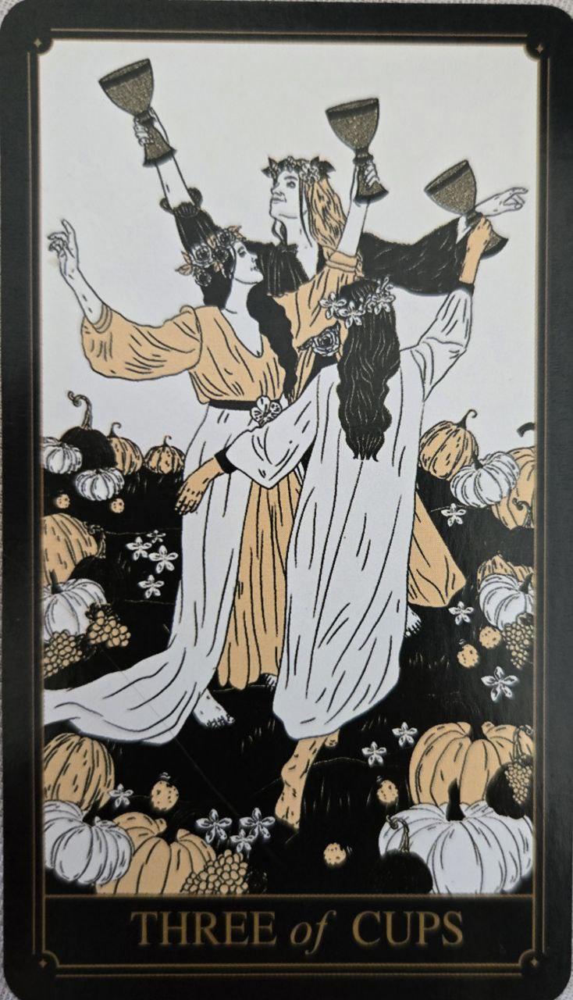
Karta radosti, osláv a spoločenských stretnutí. Naznačuje obdobie plné podpory, priateľstva a zdieľaných zážitkov.
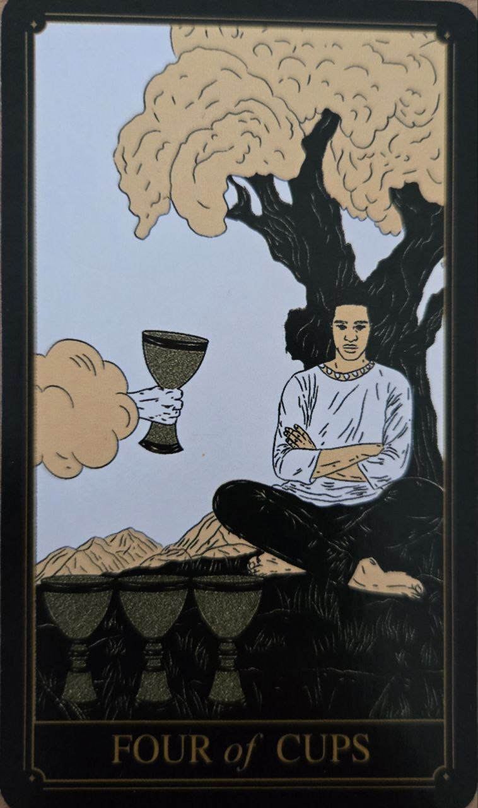
Predstavuje zamyslenie, nespokojnosť alebo prehliadanie nových možností. Povzbudzuje pozrieť sa na situáciu z iného uhla pohľadu.
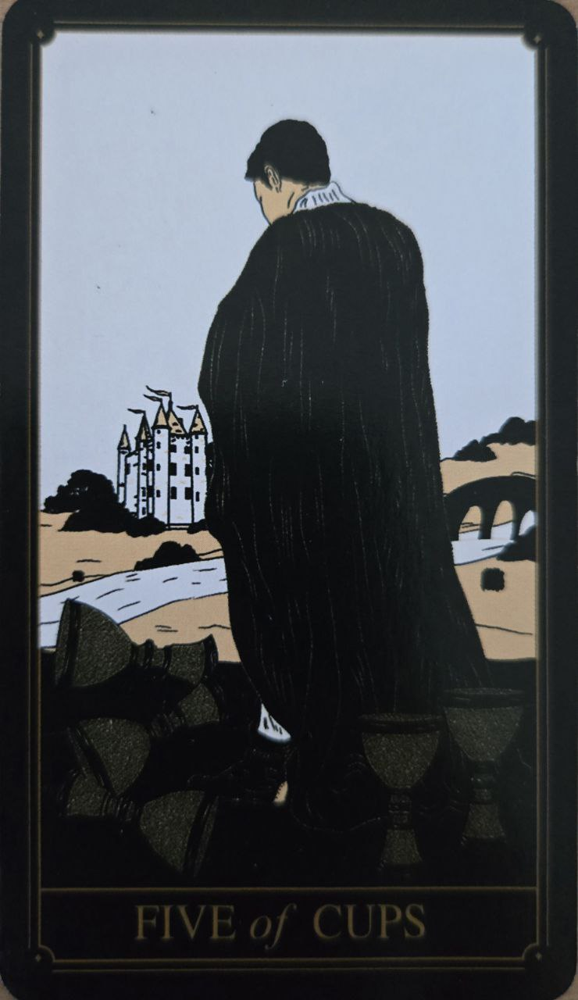
Karta sklamania a smútku nad tým, čo bolo stratené. Pripomína však, že nie všetko je stratené a nové možnosti stále existujú.
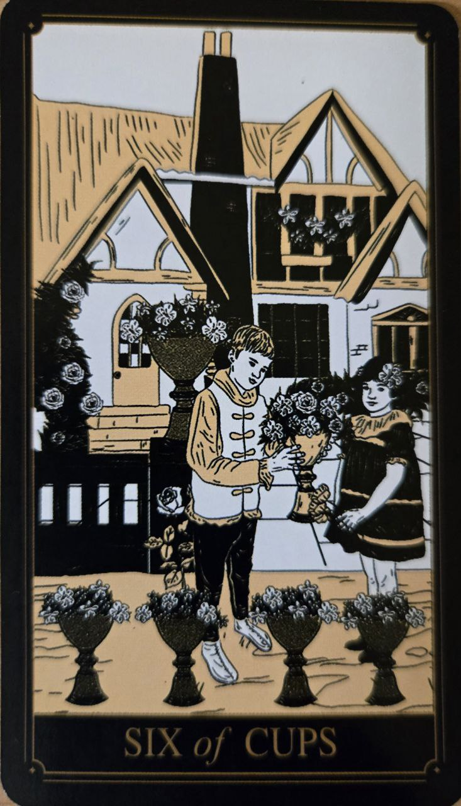
Symbol spomienok, nostalgie a návratu k minulosti. Často sa spája s detstvom, starými priateľstvami alebo príjemnými zážitkami.
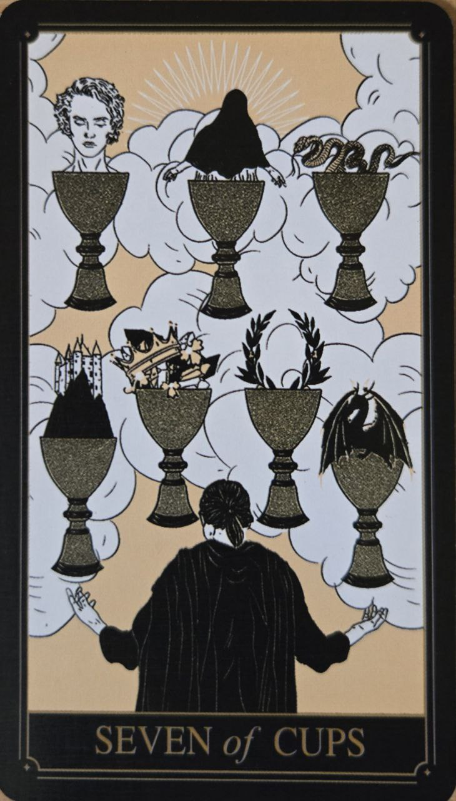
Karta snov, fantázie a mnohých možností. Upozorňuje na potrebu rozlišovať medzi realitou a ilúziami.
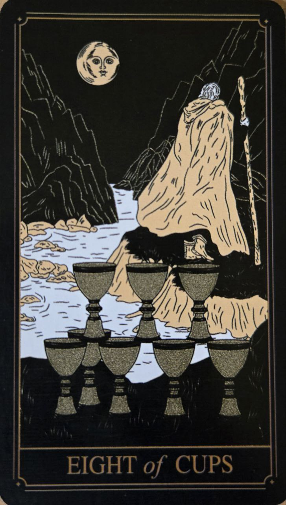
Predstavuje odchod od niečoho, čo už neprináša naplnenie. Naznačuje hľadanie hlbšieho zmyslu alebo novej cesty.
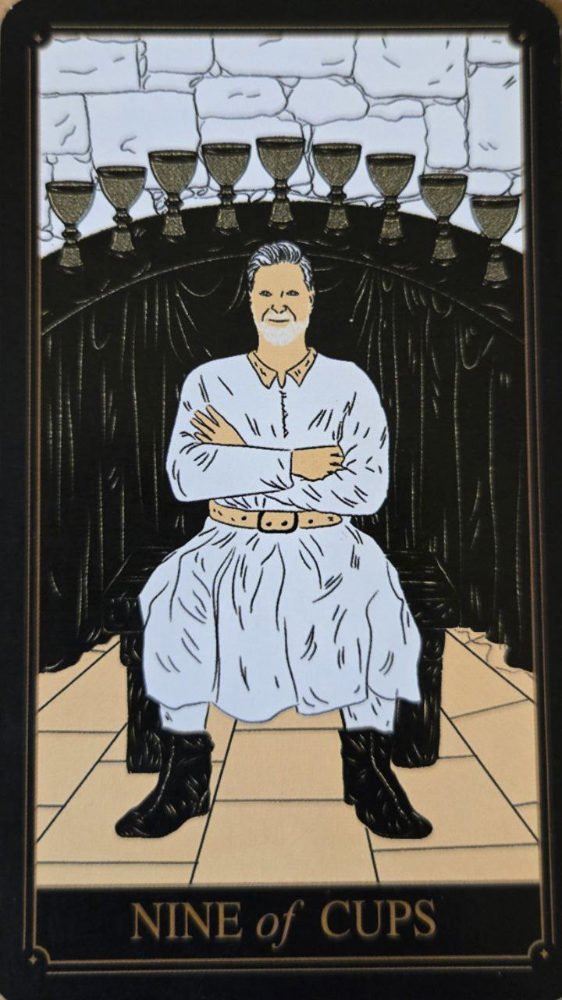
Karta spokojnosti, splnených želaní a osobného úspechu. Symbolizuje pocit vďačnosti a radosti z dosiahnutých výsledkov.
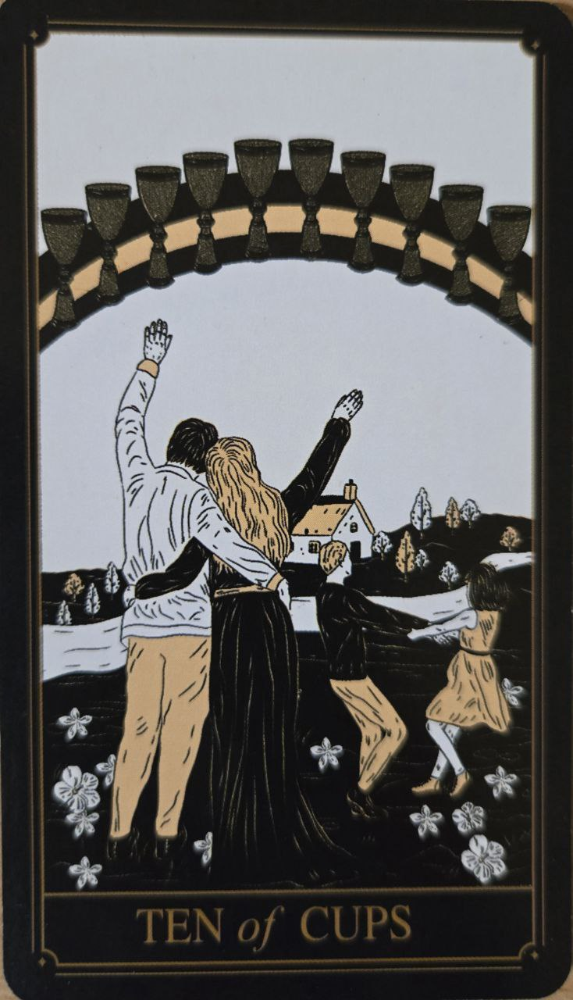
Predstavuje šťastie, harmóniu a emocionálne naplnené vzťahy. Často sa spája s rodinou, láskou a pocitom domova.
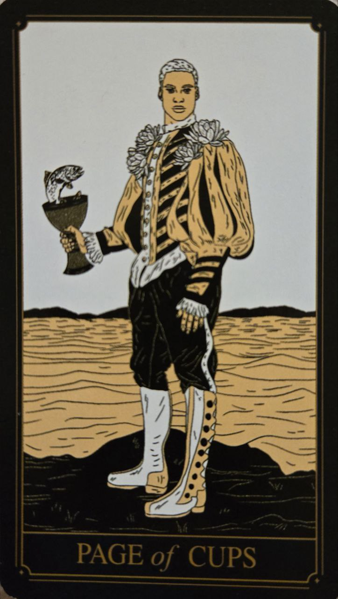
Symbol citlivosti, intuície a tvorivosti. Naznačuje nové emocionálne zážitky alebo príjemné prekvapenie.
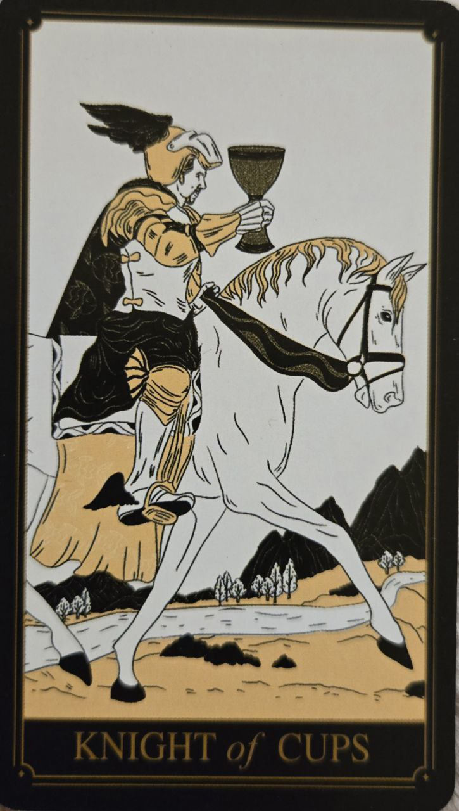
Karta romantiky, idealizmu a nasledovania vlastného srdca. Predstavuje človeka, ktorý sa riadi citmi a predstavivosťou.
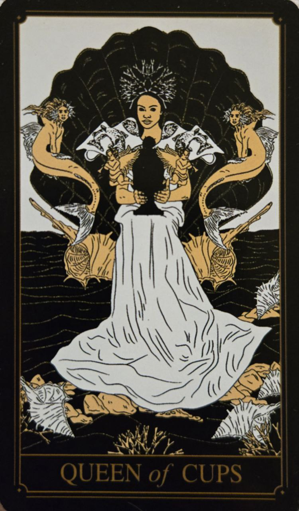
Predstavuje empatiu, múdrosť a hlboké porozumenie emóciám. Je symbolom intuície a súcitu.
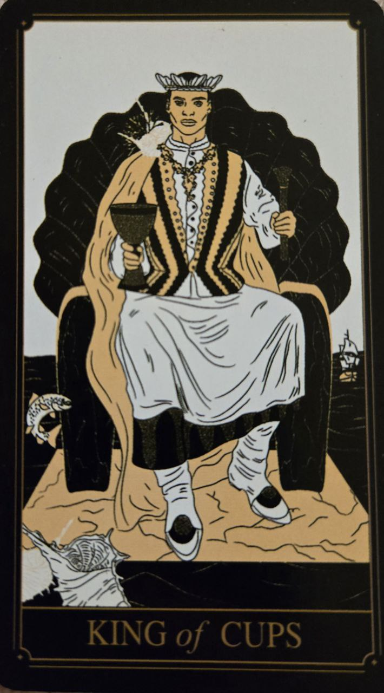
Karta emocionálnej zrelosti a vnútornej rovnováhy. Predstavuje schopnosť zvládať pocity pokojne a s nadhľadom.